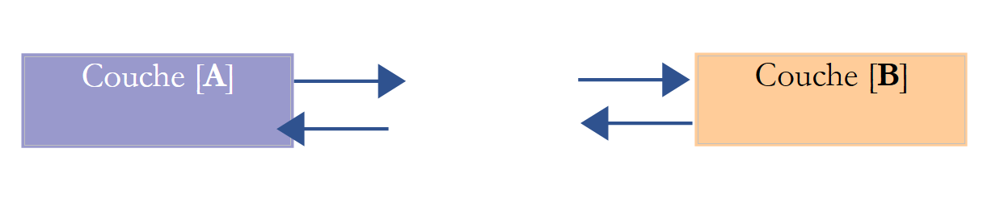
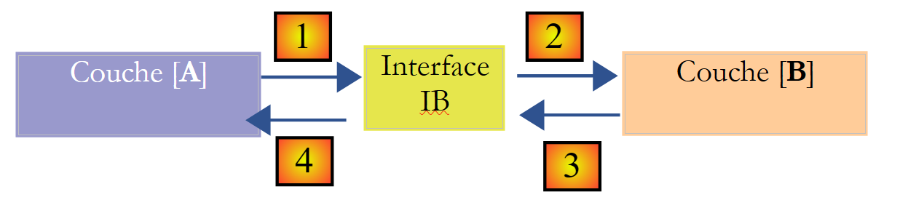
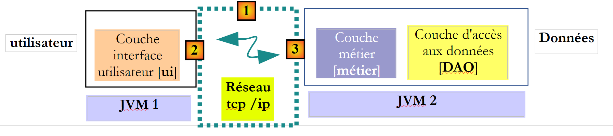

4. [TD]: Gelaagde architecturen
Trefwoorden: meerlaagse architectuur, Spring, afhankelijkheidsinjectie.
4.1. Introduction
Laten we even terugblikken op wat er is gedaan:
- in deel 1 van de oefening ELECTIONS is er geen enkele klasse gebruikt. We hebben een oplossing gebouwd zoals we die in de programmeertaal C zouden hebben gebouwd.
- In deel 2 van de oefening zijn twee klassen geïntroduceerd:
- [ListeElectorale], die de attributen (id, naam, stemmen, zetels, uitgeschakeld) van een kandidatenlijst vertegenwoordigt
- [ElectionsException], een klasse voor ongecontroleerde uitzonderingen. Dit type uitzondering wordt gebruikt telkens wanneer er een fatale fout optreedt in de verkiezingsapplicatie. Het is een ongecontroleerde uitzondering, c.a.d, die de ontwikkelaar niet hoeft af te vangen met een try-catch.
De berekening van de verkiezingsuitslag werd tot nu toe toevertrouwd aan een methode [main] van een klasse [MainElections]
De vorige oplossing omvat drie klassieke fasen:
- het verzamelen van de gegevens, regels 17-18
- de berekening van de uitkomst, regels 19-20
- de weergave en/of opslag van de resultaten, regels 21-22
Alleen fase 2 is echt constant. Fase 1 kan variëren: de gegevens kunnen afkomstig zijn van het toetsenbord, zoals in de bestudeerde voorbeelden, uit een tekstbestand, via een grafische interface, uit een database, via het netwerk, ... Ook zijn er talrijke manieren om de resultaten in fase 3 weer te geven: ze op het scherm weergeven zoals in de bestudeerde voorbeelden, ze opslaan in een bestand of in een database, ze via het netwerk verzenden, ...
Meer in het algemeen kan een applicatie vaak worden gemodelleerd in drie lagen, die elk een duidelijk omschreven rol hebben:
 |
Deze architectuur wordt ook wel „drielagenarchitectuur“ genoemd, een vertaling van het Engelse „three-tier architecture“. De term „drie lagen“ verwijst normaal gesproken naar een architectuur waarbij elke laag zich op een andere machine bevindt. Wanneer de lagen zich op dezelfde machine bevinden, wordt de architectuur een „drielagenarchitectuur“.
- De laag [metier] bevat de bedrijfsregels van de applicatie. Voor onze verkiezingsapplicatie zijn dit de regels waarmee de zetels van de verschillende lijsten kunnen worden berekend, zodra bekend is hoeveel stemmen elke lijst heeft behaald. Deze laag heeft gegevens nodig om te kunnen functioneren. Bijvoorbeeld in de verkiezingsapplicatie:
- de lijsten, elk met hun naam en het aantal stemmen
- het aantal te vervullen zetels
- de kiesdrempel waaronder een lijst wordt uitgesloten
In het bovenstaande schema kunnen de gegevens uit twee bronnen afkomstig zijn:
- de gegevenslaag of [dao] (DAO = Data Access Object) voor gegevens die al in bestanden of databases zijn opgeslagen. Dit zou hier het geval kunnen zijn voor de namen van de lijsten, het aantal te vervullen zetels en de kiesdrempel. Deze informatie is immers al bekend vóór de verkiezing zelf.
- de gebruikersinterface-laag of [ui] (UI = User Interface) voor gegevens die door de gebruiker worden ingevoerd of aan de gebruiker worden getoond. Dit zou hier het geval kunnen zijn voor de stemmen van de lijsten, die pas op het laatste moment bekend zijn, evenals voor de weergave van de verkiezingsuitslag.
- In het algemeen zorgt de laag [dao] voor de toegang tot persistente gegevens (bestanden, databases) of niet-persistente gegevens (netwerk, sensoren, ...).
- De laag [ui] zorgt op haar beurt voor de interacties met de gebruiker, indien er een is.
- De drie lagen zijn onafhankelijk van elkaar gemaakt door het gebruik van Java-interfaces.
- Er bestaan verschillende methoden om deze lagen samen in de applicatie te integreren. We zullen gebruikmaken van een tool genaamd „Spring“. In het schema loopt deze dwars door de andere lagen heen.
We gaan de eerder ontwikkelde applicatie [Elections] hergebruiken om deze een drielaagse architectuur te geven. Hiervoor gaan we de lagen van [ui, metier, dao] een voor een bestuderen, te beginnen met de laag [dao], de laag die zich bezighoudt met de persistente gegevens.
Maar eerst moeten we de interfaces van de verschillende lagen van de applicatie [Elections] definiëren.
4.2. De interfaces van de applicatie [Elections]
Ter herinnering: een interface definieert een reeks methodesignaturen. De klassen die de interface implementeren, vullen deze methoden met inhoud.
Laten we terugkeren naar de drielaagse architectuur van onze applicatie:
|
In dit type architectuur neemt de gebruiker vaak het initiatief. Hij doet een verzoek in [1] en ontvangt een antwoord in [8]. Dit noemen we de verzoek-antwoordcyclus. Laten we het voorbeeld nemen van de berekening van het aantal behaalde zetels op de avond van de verkiezingen. Hiervoor zijn verschillende stappen nodig:
- de laag [ui] moet de gebruiker vragen hoeveel stemmen elke lijst heeft behaald. Hiervoor moet zij de gebruiker de namen van de deelnemende lijsten tonen. De gebruiker hoeft dan alleen maar het aantal stemmen naast elke lijst in te vullen en vervolgens de berekening van de zetels aan te vragen.
- De laag [ui] beschikt niet over de namen van de lijsten. Deze zijn opgeslagen in de gegevensbron rechts van het schema. De laag zal het pad [2, 3, 4, 5, 6, 7] gebruiken om ze op te halen. De bewerking [2] is het opvragen van de lijsten, de bewerking [7] het antwoord op dit verzoek. Zodra dit is gebeurd, kan de laag ze via [8] aan de gebruiker presenteren.
- De gebruiker geeft het aantal stemmen dat elke lijst heeft behaald door aan de laag [ui]. Dit is de hierboven genoemde bewerking [1]. Tijdens deze stap heeft de gebruiker alleen interactie met de laag [ui]. Deze laag controleert met name de geldigheid van de ingevoerde gegevens. Zodra dit is gebeurd, vraagt de gebruiker om de lijst met zetels die elke lijst heeft behaald.
- De laag [ui] vraagt de bedrijfslaag om de zetels te berekenen. Hiervoor stuurt zij de gegevens door die zij van de gebruiker heeft ontvangen. Dit is de bewerking [2].
- De laag [metier] heeft bepaalde informatie nodig om haar taak uit te voeren. Ze beschikt al over de lijsten uit bewerking (b). Daarnaast heeft ze het aantal te vervullen zetels en de waarde van de kiesdrempel nodig. Zij zal deze informatie opvragen bij de laag [dao] via het pad [3, 4, 5, 6]. [3] is het oorspronkelijke verzoek en [6] het antwoord op dit verzoek.
- Nu de laag [metier] over alle benodigde gegevens beschikt, berekent deze het aantal zetels dat elke lijst heeft behaald.
- De laag [metier] kan nu reageren op de aanvraag van de laag [ui] die in (d) is gedaan. Dit is het pad [7].
- De laag [ui] zal deze resultaten opmaken om ze in een geschikte vorm aan de gebruiker te presenteren en ze vervolgens weer te geven. Dit is het pad [8].
- Men kan zich voorstellen dat deze resultaten in een bestand of een database moeten worden opgeslagen. Dit kan automatisch gebeuren. In dat geval zal de laag [metier] na bewerking (f) de laag [dao] vragen om de resultaten op te slaan. Dit is het pad [3, 4, 5, 6]. Dit kan ook alleen op verzoek van de gebruiker gebeuren. In dat geval wordt het pad [1-8] gebruikt door de vraag-antwoordcyclus.
Uit deze beschrijving blijkt dat een laag gebruikmaakt van de bronnen van de laag rechts ervan, nooit van die links ervan. Laten we twee aangrenzende lagen bekijken:
 |
De laag [A] doet verzoeken aan de laag [B]. In de eenvoudigste gevallen wordt een laag geïmplementeerd door één enkele klasse. Een applicatie evolueert in de loop van de tijd. Zo kan de laag [B] verschillende implementatieklassen hebben, zoals [B1, B2, ...]. Als de laag [B] de laag [dao] is, kan deze een eerste implementatie hebben, [B1], die gegevens uit een bestand ophaalt. Enkele jaren later kan men de gegevens in een database willen opslaan. Dan wordt er een tweede implementatieklasse [B2] gebouwd. Als in de oorspronkelijke applicatie de laag [A] rechtstreeks met de klasse [B1] werkte, zijn we genoodzaakt de code van de laag [A] gedeeltelijk te herschrijven. Stel bijvoorbeeld dat we in de laag [A] iets als het volgende hebben geschreven:
- regel 1: er wordt een instantie van de klasse [B1] aangemaakt
- regel 3: er worden gegevens opgevraagd bij deze instantie
Als we aannemen dat de nieuwe implementatieklasse [B2] methoden gebruikt met dezelfde signatuur als die van de klasse [B1], dan moeten alle [B1] worden gewijzigd in [B2]. Dat is het zeer gunstige en vrij onwaarschijnlijke scenario als er geen aandacht is besteed aan deze methodesignaturen. In de praktijk komt het vaak voor dat de klassen [B1] en [B2] niet dezelfde methodesignaturen hebben, waardoor een groot deel van de laag [A] volledig herschreven moet worden.
Dit kan worden verbeterd door een interface in te voegen tussen de lagen [A] en [B]. Dit betekent dat we in een interface de methodesignaturen vastleggen die door de laag [B] aan de laag [A] worden aangeboden. Het vorige schema ziet er dan als volgt uit:
 |
De laag [A] richt zich nu niet meer rechtstreeks tot de laag [B], maar tot de interface [IB] daarvan. Zo verschijnt in de code van de laag [A] de implementatieklasse [Bi] van de laag [B] slechts één keer voor, namelijk bij de implementatie van de interface [IB]. Zodra dit is gebeurd, wordt in de code de interface [IB] gebruikt en niet de bijbehorende implementatieklasse. De vorige code wordt dan als volgt:
- regel 1: er wordt een instantie [ib] aangemaakt die de interface [IB] implementeert, door de klasse [B1] te instantiëren
- regel 3: er worden gegevens opgevraagd bij de instantie [ib]
Als we nu de implementatie [B1] van de laag [B] vervangen door een implementatie [B2], en deze twee implementaties voldoen aan dezelfde interface [IB], dan hoeft alleen regel 1 van de laag [A] te worden gewijzigd en verder niets. Dit is een groot voordeel dat op zichzelf al het systematische gebruik van interfaces tussen twee lagen rechtvaardigt.
We kunnen nog een stap verder gaan en de laag [A] volledig onafhankelijk maken van de laag [B]. In de bovenstaande code vormt regel 1 een probleem omdat deze een harde verwijzing bevat naar de klasse [B1]. Het zou ideaal zijn als de laag [A] zou kunnen beschikken over een implementatie van de interface [IB] zonder een klasse te hoeven noemen. Dit zou in overeenstemming zijn met ons bovenstaande schema. We zien hier dat de laag [A] zich richt tot de interface [IB] en het is niet duidelijk waarom deze de naam zou moeten kennen van de klasse die deze interface implementeert. Dit detail is niet nuttig voor de laag [A].
Met het Spring-framework (http://www.springframework.org) kan dit resultaat worden bereikt. De voorgaande architectuur evolueert als volgt:
 |
De transversale laag [Spring] stelt een laag in staat om via de configuratie een verwijzing te verkrijgen naar de laag die zich rechts ervan bevindt, zonder dat de naam van de implementatieklasse van die laag bekend hoeft te zijn. Deze naam staat in de configuratiebestanden en niet in de Java-code. De Java-code van de laag [A] ziet er dan als volgt uit:
- regel 1: een instantie [ib] die de interface [IB] van de laag [B] implementeert. Deze instantie wordt door Spring aangemaakt op basis van informatie uit een configuratiebestand. Spring zorgt voor het aanmaken van:
- de instantie [b] die de laag [B] implementeert
- de instantie [a] die de laag [A] implementeert. Deze instantie wordt geïnitialiseerd. Het bovenstaande veld [ib] krijgt als waarde de referentie [b] van het object dat de laag [B] implementeert
- regel 3: er worden gegevens opgevraagd bij de instantie [ib]
We zien nu dat de implementatieklasse [B1] van laag B nergens in de code van laag [A] voorkomt. Wanneer de implementatie [B1] wordt vervangen door een nieuwe implementatie [B2], verandert er niets in de code van de klasse [A]. We wijzigen simpelweg de Spring-configuratiebestanden om [B2] te instantiëren in plaats van [B1].
De combinatie van Spring en Java-interfaces zorgt voor een doorslaggevende verbetering van het onderhoud van applicaties door de lagen ervan onderling waterdicht te maken. Dit is de oplossing die we zullen gebruiken voor de applicatie [Elections].
Laten we terugkeren naar de drielaagse architectuur van onze applicatie:
 |
In eenvoudige gevallen kunnen we uitgaan van de laag [metier] om de interfaces van de applicatie te ontdekken. Om te kunnen werken, heeft de applicatie gegevens nodig:
- die al beschikbaar zijn in bestanden, databases of via het netwerk. Deze worden geleverd door de laag [dao].
- nog niet beschikbaar zijn. Deze worden dan geleverd door de laag [ui], die ze van de gebruiker van de applicatie ontvangt.
Welke interface moet de laag [dao] aanbieden aan de laag [metier]? Welke interacties zijn mogelijk tussen deze twee lagen? De laag [dao] moet de volgende gegevens aan de laag [metier] leveren:
- het aantal te vervullen zetels
- de waarde van de kiesdrempel waaronder een lijst wordt uitgesloten
- de namen van de lijsten
Deze informatie is immers al vóór de verkiezing bekend en kan dus worden opgeslagen. In de richting [metier] -> [dao] kan de laag [metier] de laag [dao] vragen om de verkiezingsuitslag vast te leggen, met name de zetels die door de verschillende lijsten zijn behaald.
Met deze informatie zou men een eerste definitie van de interface van de laag [dao] kunnen opstellen:
public interface IElectionsDao {
public double getSeuilElectoral();
public int getNbSiegesAPourvoir();
public ListeElectorale[] getListesElectorales();
public void setListesElectorales(ListeElectorale[] listesElectorales);
}
- regel 1: de interface heet [IElectionsDao]. Deze definieert vier methoden:
- drie methoden om gegevens uit de gegevensbron te lezen: [getSeuilElectoral, getNbSiegesAPourvoir, getListesElectorales]. Met deze drie methoden kan de laag [metier] de gegevens ophalen die de huidige verkiezing kenmerken.
- één methode om gegevens naar de gegevensbron te schrijven: [setListesElectorales]. Met deze methode kan de laag [metier] vragen om de door haar berekende resultaten op te slaan.
Laten we terugkeren naar de drielaagse architectuur van onze applicatie:
|
Welke interface moet de laag [metier] aanbieden aan de laag [ui]? Laten we de mogelijke interacties tussen deze twee lagen eens bekijken.
- De laag [ui] zal als taak hebben om de gebruiker te vragen naar de stemmen voor de verschillende concurrerende lijsten. Hiervoor moet zij het aantal lijsten kennen. Zij kan deze informatie opvragen bij de laag [metier], die op haar beurt de tabel met de deelnemende lijsten kan opvragen bij de laag [dao]. Als de laag [metier] over deze tabel beschikt, kan deze net zo goed worden doorgestuurd naar de laag [ui]. Deze laag beschikt dan over de namen van de lijsten en kan haar berichten aan de gebruiker verfijnen door bijvoorbeeld te vragen: „Aantal stemmen voor lijst A“.
- Zodra de laag [ui] de stemmen van alle lijsten heeft ontvangen, zal deze de laag [metier] vragen om de zetels te berekenen. Deze laag kan deze berekening uitvoeren en het resultaat doorgeven aan de laag [ui].
- Laag [ui] kan deze resultaten vervolgens aan de gebruiker presenteren. De gebruiker kan ook vragen om deze resultaten op te slaan.
- De laag [ui] kan bovendien aanvullende informatie aan de gebruiker willen presenteren, zoals de kiesdrempel of het aantal te vervullen zetels.
Met deze informatie zou een eerste definitie van de interface van de laag [metier] kunnen worden opgesteld:
public interface IElectionsMetier {
public ListeElectorale[] getListesElectorales();
public int getNbSiegesAPourvoir();
public double getSeuilElectoral();
public void recordResultats(ListeElectorale[] listesElectorales);
public ListeElectorale[] calculerSieges(ListeElectorale[] listesElectorales);
}
- regel 1: de interface heet [IElectionsMetier]. Deze definieert de volgende methoden:
- regel 3: een methode [getListesElectorales] waarmee de laag [ui] de tabel met de concurrerende lijsten kan ophalen;
- regel 5: de methode [getNbSiegesAPourvoir] maakt het mogelijk het aantal te vervullen zetels op te vragen;
- regel 7: de methode [getSeuilElectoral] maakt het mogelijk de kiesdrempel op te vragen;
- regel 11: een methode [calculerSieges] (regel 36) waarmee de laag [ui] de berekening van de zetels kan aanvragen zodra het aantal stemmen van de verschillende lijsten bekend is. De parameter is de tabel met de deelnemende lijsten, zonder hun zetels en zonder de booleaanse waarde ‘uitgeschakeld’. Het geretourneerde resultaat is dezelfde tabel, maar nu met de velden [sièges, elimine] geïnitialiseerd;
- regel 9: een methode [recordResultats] waarmee de laag [ui] de registratie van de resultaten kan aanvragen.
Opmerking: vanwege haar positie neemt de laag [métier] bepaalde methoden van de laag [DAO] over om deze aan de laag [UI] aan te bieden. Vanwege deze redundantie kan men in de verleiding komen om alles samen te voegen in één enkele laag die zowel de bedrijfslogica als de toegang tot de gegevens zou omvatten. Deze enkele laag wordt soms het model genoemd, de M in de afkorting MVC (Model - View - Controller). MVC is een veelgebruikt ontwerppatroon (design pattern) in webapplicaties.
Laten we de signatuur van de methode [calculerSieges] eens bekijken:
public ListeElectorale[] calculerSieges(ListeElectorale[] listesElectorales);
Hierboven stond geschreven: „De parameter is de array van concurrerende lijsten, zonder hun zetels en zonder de uitgesloten booleaanse waarde. Het resultaat is dezelfde array, maar nu met de velden [sièges, elimine]”. De methodesignatuur zou ook als volgt kunnen zijn:
public void calculerSieges(ListeElectorale[] listesElectorales);
De parameter [listesElectorales] is een objectverwijzing, in dit geval een array. Elk element is op zijn beurt een objectverwijzing, in dit geval van het type [ListeElectorale]. De methode [calculerSieges] wijzigt de velden [sieges, elimine] van elk van deze objecten. De aanroepende methode heeft een pointer [listesElectorales] die:
- vóór de aanroep is dit de referentie van een objectarray [ListeElectorale] waarvan de velden [sieges, elimine] niet zijn geïnitialiseerd;
- na de aanroep is dit de (zelfde) verwijzing naar een objectarray [ListeElectorale] waarvan de velden [sieges, elimine] zijn geïnitialiseerd;
Waarom zou je dan de handtekening gebruiken:
public ListeElectorale[] calculerSieges(ListeElectorale[] listesElectorales);
Bij het schrijven van een interface is het goed om te onthouden dat deze in twee verschillende contexten kan worden gebruikt: local en distant. In de context local worden de aanroepende methode en de aangeroepen methode uitgevoerd in dezelfde JVM (Java Virtual Machine):
|
Als de laag [ui] de methode calculerSieges van de laag [DAO] aanroept, heeft deze wel degelijk een verwijzing naar de parameter [ListeElectorale[] listesElectorales] die zij doorgeeft aan de methode.
In de context distant worden de aanroepende methode en de aangeroepen methode uitgevoerd in verschillende JVM’en:
 |
Hierboven wordt de laag [ui] uitgevoerd in JVM 1 en de laag [métier] in JVM 2 op twee verschillende machines. De twee lagen communiceren niet rechtstreeks met elkaar. Tussen beide ligt een laag die we de communicatielaag [1] zullen noemen. Deze bestaat uit een zendlaag [2] en een ontvangstlaag [3]. De ontwikkelaar hoeft deze communicatielagen doorgaans niet zelf te schrijven. Ze worden automatisch gegenereerd door softwaretools. De laag [metier] wordt geschreven alsof deze in dezelfde JVM wordt uitgevoerd als de laag [DAO]. Er is dus geen wijziging in de code nodig.
Het communicatiemechanisme tussen de laag [ui] en de laag [métier] is als volgt:
- de laag [ui] roept de methode calculerSieges van de laag [métier] aan en geeft daarbij de parameter [ListeElectorale[] listesElectorales1];
- deze parameter wordt in feite doorgegeven aan de verzendlaag [2]. Deze zal de waarde van de parameter listesElectorales1 via het netwerk verzenden, en niet de referentie ervan. De exacte vorm van deze waarde hangt af van het gebruikte communicatieprotocol;
- de ontvangstlaag [3] haalt deze waarde op en reconstrueert op basis daarvan een object [ListeElectorale[] listesElectorales2] dat een afspiegeling is van de oorspronkelijke parameter die door de laag [metier] is verzonden. We hebben nu twee identieke objecten (wat de inhoud betreft) in twee verschillende JVM-lagen: listesElectorales1 en listesElectorales2.
- De ontvangstlaag geeft het object listesElectorales2 door aan de methode calculerSieges van de laag [métier]; deze slaat het op in de database. Na deze bewerking verwijst de referentie listesElectorales2 naar een array van objecten [ListeElectorale] waarvan de velden [sieges, elimine] zijn geïnitialiseerd. . Dit geldt niet voor het object listesElectorales1, waarnaar de laag [ui] verwijst. Als we willen dat de laag [ui] een verwijzing naar het object listesElectorales2 heeft, moeten we dit object naar de laag sturen. Daarom moeten we de volgende handtekening gebruiken voor de methode [calculerSieges]:
public ListeElectorale[] calculerSieges(ListeElectorale[] listesElectorales);
- Met deze handtekening zal de methode calculerSieges de referentie listesElectorales2 als resultaat opleveren. Dit resultaat wordt teruggestuurd naar de ontvangstlaag [3], die de laag [métier] had aangeroepen. Deze laag geeft de waarde (en niet de referentie) van listesElectorales2 terug aan de verzendlaag [2];
- de verzendlaag [2] haalt deze waarde op en reconstrueert op basis daarvan een object [ListeElectorale[] listesElectorales3] afbeelding van het resultaat dat wordt weergegeven door de methode calculerSieges van de laag [métier].
- Het object [ListeElectorale[] listesElectorales3] wordt doorgegeven aan de methode van de laag [ui], waarvan de aanroep van de methode calculerSieges van de laag [DAO] dit hele mechanisme in gang had gezet;
Tijdens dit proces worden objecten van het type [ListeElectorale] doorgegeven tussen de lagen [2] en [3]:
- wanneer de laag [2] de waarde van een object van het type [ListeElectorale] doorgeeft aan de laag [3], wordt gezegd dat het object wordt geserialiseerd. De exacte vorm van deze serialisatie hangt af van het gebruikte communicatieprotocol;
- wanneer de laag [3] de waarde van een object [ListeElectorale] ophaalt om opnieuw een object [ListeElectorale] aan te maken, wordt gezegd dat het object gedeserialiseerd is;
Om een object deze serialisatie/deserialisatie te laten ondergaan, vereisen sommige protocollen dat het object de interface [Serializable] implementeert. Deze interface is slechts een markering. Er hoeven geen methoden te worden geïmplementeerd. Daarom wordt de klasse [ListeElectorale] voortaan als volgt gedeclareerd:
public abstract class ListeElectorale implements Serializable {
private static final long serialVersionUID = 1L;
- Het veld op regel 2 is vastgelegd. Dit kan ongewijzigd blijven en worden gebruikt voor elke klasse van het type [Serializable].
4.3. De uitzonderingsklasse
Laten we teruggaan naar de interface van de laag [DAO]:
 |
public interface IElectionsDao {
public double getSeuilElectoral();
public int getNbSiegesAPourvoir();
public ListeElectorale[] getListesElectorales();
public void setListesElectorales(ListeElectorale[] listesElectorales);
}
Deze methoden werken met een database en kunnen verschillende fouten tegenkomen, bijvoorbeeld een niet-beschikbare SGBD. Bij het schrijven van een methode moet altijd rekening worden gehouden met foutgevallen. Deze worden doorgaans gemeld door middel van een uitzondering. We zijn de klasse [ElectionsException] al tegengekomen in paragraaf 3.3. We zullen deze blijven gebruiken, maar hem als volgt uitbreiden:
package ...;
import java.io.Serializable;
import java.util.ArrayList;
import java.util.List;
// uitzonderingsklasse voor de applicatie Verkiezingen
// de uitzondering is ongecontroleerd
public class ElectionsException extends RuntimeException implements Serializable {
// serial ID
private static final long serialVersionUID = 1L;
// lokale velden
private int code;
private List<String> erreurs;
// constructors
public ElectionsException() {
super();
}
public ElectionsException(int code, Throwable e) {
// bovenliggend
super(e);
// lokaal
this.code = code;
this.erreurs = getErreursForException(e);
}
public ElectionsException(int code, String message, Throwable e) {
// bovenliggend
super(message,e);
// lokaal
this.code = code;
this.erreurs = getErreursForException(e);
}
public ElectionsException(int code, String message) {
// bovenliggend
super(message);
// lokaal
this.code = code;
List<String> erreurs = new ArrayList<>();
erreurs.add(message);
this.erreurs = erreurs;
}
public ElectionsException(int code, List<String> erreurs) {
// bovenliggend
super();
// lokaal
this.code = code;
this.erreurs = erreurs;
}
// lijst met foutmeldingen van een uitzondering
private List<String> getErreursForException(Throwable th) {
// de lijst met foutmeldingen van de uitzondering wordt opgehaald
Throwable cause = th;
List<String> erreurs = new ArrayList<>();
while (cause != null) {
// de melding wordt alleen opgehaald als deze !=null is en niet leeg
String message = cause.getMessage();
if (message != null) {
message = message.trim();
if (message.length() != 0) {
erreurs.add(message);
}
}
// volgende oorzaak
cause = cause.getCause();
}
return erreurs;
}
// getters en setters
...
}
- regels 16-17: het type [ElectionsException] bevat:
- een foutcode, regel 16;
- een lijst met foutmeldingen, regel 17;
De klasse ondersteunt vijf constructors:
- regel 20: ElectionsException()
- regel 24: ElectionsException(int code, Throwable e): de tweede parameter is van het type [Throwable], de bovenliggende klasse van de klasse [Exception]. Met deze constructor kan de uitzondering e worden ingekapseld met een foutcode. Het type [Throwable] (en dus het type Exception) maakt het mogelijk om een of meerdere uitzonderingen in te kapselen. Het idee is:
- een uitzondering die zich voordoet op te vangen (catch);
- deze te voorzien van een melding door hem in een nieuwe uitzondering in te kapselen;
- de nieuwe uitzondering opnieuw te genereren;
De inkapseling vindt plaats op regel 34 via de instructie [super(message,e)]. Dit inkapselingsproces kan worden herhaald en de oorspronkelijke uitzondering kan worden aangevuld met verschillende berichten. Men spreekt dan van een stapel uitzonderingen. Met de methode [private List<String> getErreursForException(Throwable th)] kunnen de verschillende berichten worden opgehaald die bij de ingekapselde uitzonderingen horen:
- (vervolg)
- (vervolg)
- de ingekapselde uitzondering wordt opgehaald met de methode Throwable [Throwable].getCause();
- het bericht dat bij een uitzondering hoort, wordt verkregen via de String-methode [Throwable].getMessage();
- (vervolg)
- regels 28-29: de velden [code, erreurs] worden geconstrueerd;
- regel 32: public ElectionsException(int code, String message, Throwable e): deze constructor is vergelijkbaar met de vorige, behalve dat hij de uitzondering die hij gaat inkapselen aanvult met een code en een bericht;
- regel 40: public ElectionsException(int code, String message): constructor zonder uitzondering;
- regel 50: public ElectionsException(int code, List<String> fouten): constructor zonder uitzondering of bericht;
De klasse [ElectionsException] kan als volgt worden gebruikt:
waarbij het bericht al dan niet aanwezig zal zijn. Eenmaal aangemaakt, is de uitzondering [ElectionsException] niet bedoeld om nieuwe uitzonderingen te omvatten. Hierboven omvat deze de uitzondering e1 en de uitzonderingen die e1 omvat. Er volgen vervolgens geen nieuwe omhullingen meer.
De klasse [ElectionsException] kan ook op de volgende manier worden gebruikt: